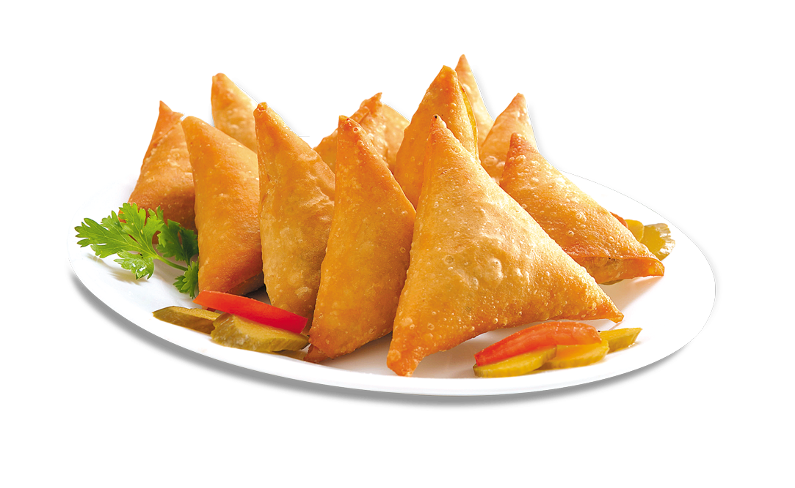

Samosa Recipe

Description
The samosa is a fried or baked pastry with a savory filling, typically made with spiced potatoes, onions, peas, and lentils.
It is a popular street food in India, Pakistan, Bangladesh, and Sri Lanka, and is also found in many other parts of the world.
Ingredients
- 2 cups all-purpose flour
- 1/4 cup vegetable oil
- 1/4 teaspoon carom seeds
- 3-4 medium potatoes, boiled and mashed
- Salt as per taste
Steps
- Place potatoes into a large pot and cover with salted water; bring to a boil.
- Preheat the oven to 400 degrees F (200 degrees C).
- Heat oil in a large skillet over medium-high heat; cook and stir onions, coriander seed, curry powder, ginger, salt, turmeric, cumin, allspice, cayenne pepper, and cinnamon in hot oil until onion is lightly browned, about 5 minutes.
- ut each pie crust into 8 equal triangles. Spoon filling onto the wide end of each triangle; fold corners over filling to create a triangle-shaped hat.
- Bake in the preheated oven until samosas are golden brown, about 15 minutes.